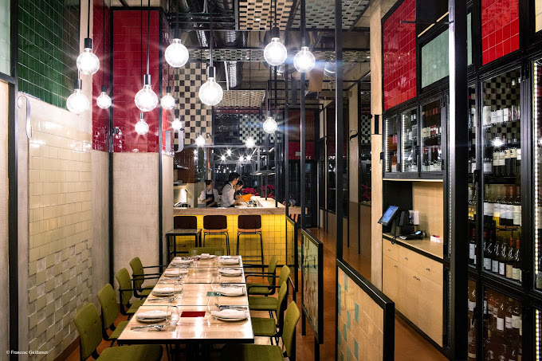
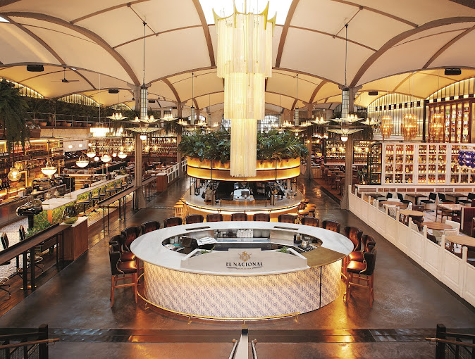
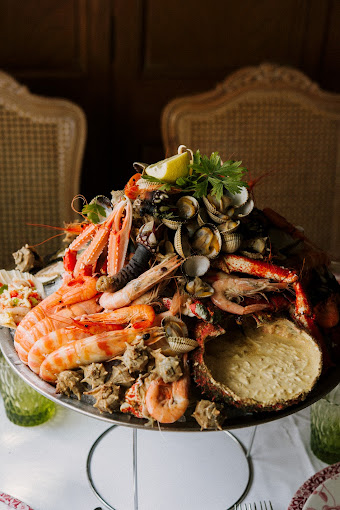

Barcelona Food Guide

Disfrutar
Located in the Eixample, just in front of the Ninot Market, Disfrutar reflects the culinary heritage of the Mediterranean with a stunning ceramic-filled design. The space is inspired by Barcelona's vibrant colors and the intimacy of small fishing villages.
Location

El Nacional Barcelona
El Nacional is a unique gastronomic multi-space that offers an array of dining experiences under one roof, celebrating the local life of Barcelona with its diverse culinary offerings.
Location

Botafumeiro
Botafumeiro is a seafood haven in Barcelona, known for its meticulous selection of fresh seafood sourced from the fish auctions of Catalonia and Galicia, bringing the essence of the sea to your table.